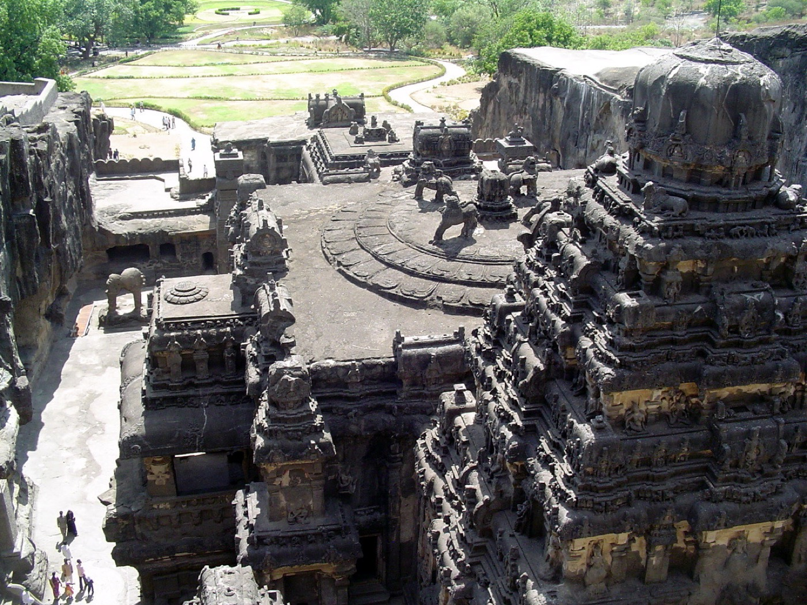
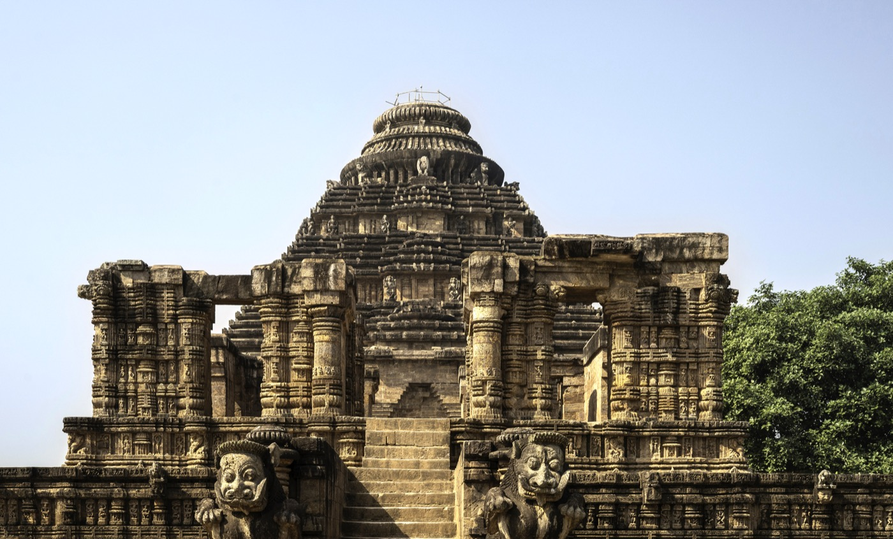
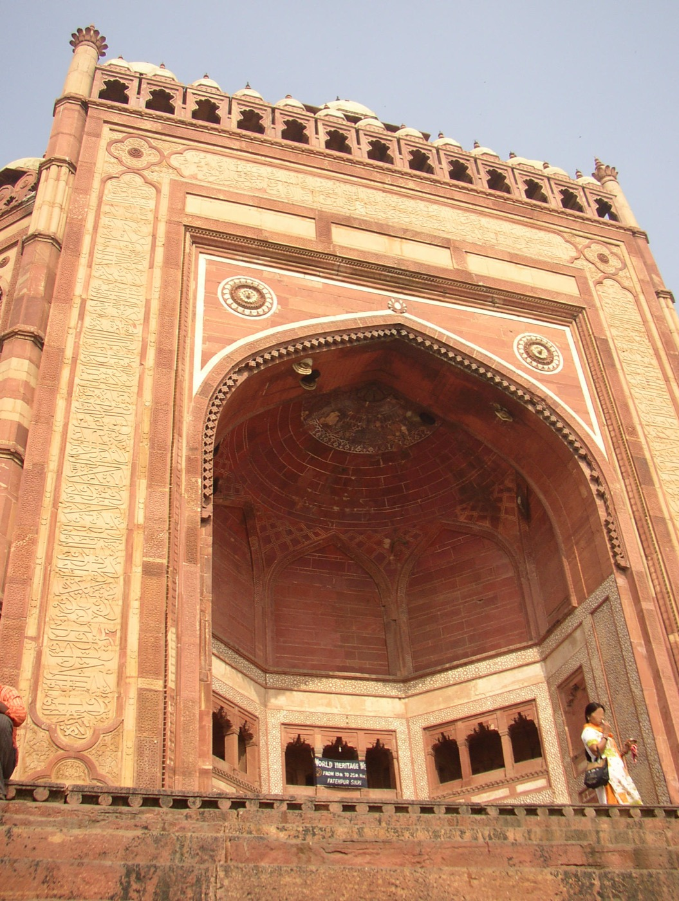
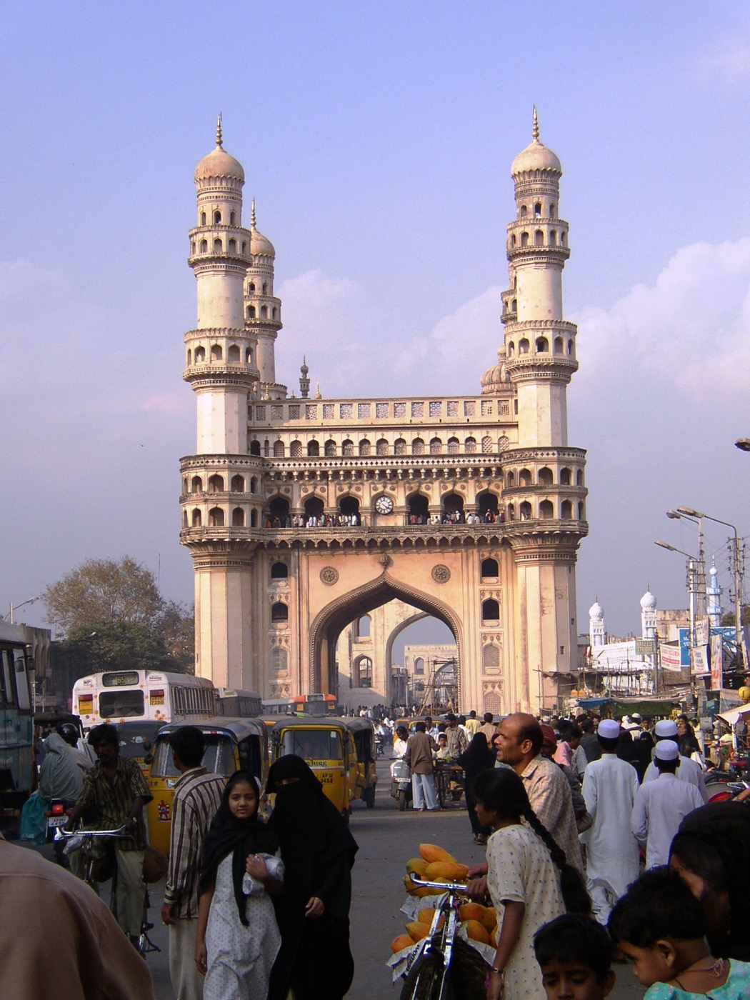
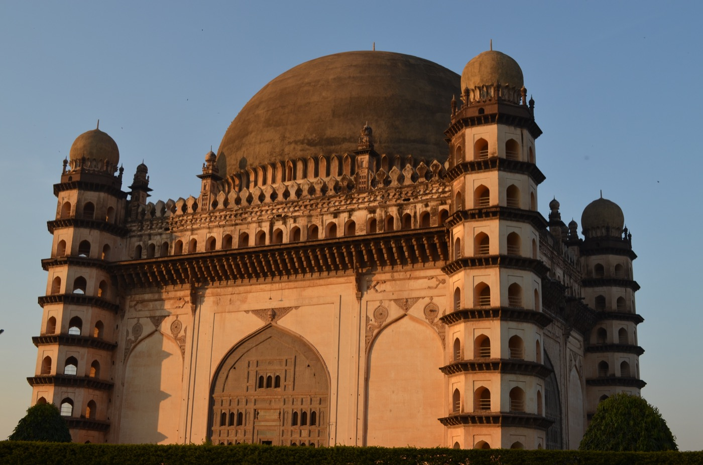
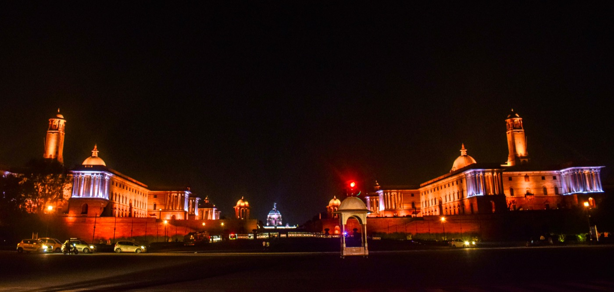

TIMELINE // THE EVOLUTION OF FORM
Journey through five millennia of Indian architectural genius. Trace the transition from cosmic rock-cut sanctums and Dravidian granite towers to Persian pointed arches, Mughal imperial symmetry, and British Indo-Saracenic synthesis.
The Four Great Architectural Traditions
Four distinct civilizational epochs defined the skyline of the subcontinent, each introducing revolutionary materials, structural mechanics, and spiritual philosophies.
Hindu & Monolithic
Governed by Vastu Shastra and Shilpa Shastra. Characterized by colossal rock-cut monolithic caves (Ellora), towering Dravidian granite vimanas (Brihadisvara), and fractal Nagara mountain shikharas (Khajuraho).
Key Monuments: Kailasa Cave, Brihadisvara, Konark, Hampi, Modhera
Core Principle: Cosmic Mountain Axis & Interlocking Dry Granite
Materials: Deccan Basalt, Coarse Granite, Khondalite, Sandstone
Explore 11 Hindu Monuments →Persian & Sultanate
Introduced true arcuated engineering to the subcontinent: pointed true arches, squinches, calligraphy bands, and whispering masonry domes like Gol Gumbaz, Qutub Minar, and Charminar.
Key Monuments: Charminar, Qutub Minar, Gol Gumbaz, Alai Darwaza
Core Principle: Intersecting Arch Pendentives & Geometric Calligraphy
Materials: Grey Quartzite, Lime Hydraulic Mortar, Red Sandstone
Explore 11 Persian Monuments →Mughal Imperial Splendor
Peak bilateral symmetry, bulbous double domes, Charbagh four-fold paradise gardens, and delicate Pietra Dura floral stone inlay in pure Makrana white marble and Sikri red sandstone.
Key Monuments: Taj Mahal, Red Fort, Fatehpur Sikri, Humayun's Tomb
Core Principle: Bilateral Axial Symmetry & Double-Dome Harmony
Materials: Makrana White Marble, Sikri Red Sandstone, Semi-Precious Gems
Explore 11 Mughal Monuments →British Indo-Saracenic
Imperial hybrid synthesis blending Victorian Gothic Revival, Neoclassical orders, and Scottish baronial plans with Mughal chattris, Indian jharokhas, and Buddhist stupa domes.
Key Monuments: Rashtrapati Bhavan, Victoria Memorial, CST Mumbai
Core Principle: Monumental Imperial Civic & Hybrid Revivalism
Materials: Yellow Malad Stone, Dholpur Sandstone, Cast Iron, Marble
Explore 11 British Monuments →5,000-Year Architectural Timeline
Follow the master timeline tracking pivotal structural innovations, royal patronage milestones, and aesthetic shifts that transformed India's built environment.
Kailasa Rock-Cut Monolith at Ellora
King Krishna I of the Rashtrakutas carves Cave 16 top-down out of a single vertical basalt cliff, excavating over 200,000 tonnes of volcanic rock without joints or mortar.

Monolithic Subtractive Carving
Zero joints • Deccan Basalt

Interlocking Granite Masonry
80-Tonne Capstone • 66m Vimana
The Big Temple of Thanjavur (Brihadisvara)
Rajaraja Chola I completes the monumental 66-meter Brihadisvara Vimana, topped with an 80-tonne single granite block cupola hoisted via a 4-mile earthen ramp.
Kandariya Mahadeva & Nagara Spires
The Chandela dynasty erects the pinnacle of Central Indian temple architecture at Khajuraho, featuring 84 fractal miniature spires (urushringas) echoing Mount Meru.

Fractal Shikhara Geometry
870+ Relief Sculptures

True Arcuated Engineering
72.5m Victory Minaret
Persian Influence & Qutub Minar
The Delhi Sultanate introduces pointed true arches, squinches, muqarnas stalactite corbeling, and Arabic/Persian calligraphic friezes to North India.
Konark Sun Temple Celestial Chariot
King Narasimhadeva I of the Eastern Ganga Dynasty conceives the colossal stone chariot of Surya on the Bay of Bengal, featuring 24 carved stone sundial wheels.

Solar Sundial Chariot
24 Astronomical Wheels

Syncretic Triumphal Arch
54m Colossal Portal
Buland Darwaza & Fatehpur Sikri
Emperor Akbar erects the 54-meter Buland Darwaza ('Gate of Magnificence'), fusing Persian high pishtaq portals with indigenous Gujarati-Rajput bracket architecture.
Charminar & Deccan Qutb Shahi Elegance
Muhammad Quli Qutb Shah commissions Iranian architect Mir Momin to construct the four-minaret ceremonial archway of Hyderabad, celebrating the founding of the city.

Four-Minaret Ceremonial Arch
56m Minarets • Stucco Jali

Bilateral Symmetry & Double Dome
Makrana Marble • Pietra Dura
The Taj Mahal at Agra
Shah Jahan and Ustad Ahmad Lahori achieve global immortality with pure Makrana white marble, Parchin Kari gemstone inlay, bulbous double domes, and riverfront Charbagh pools.
Gol Gumbaz & Acoustic Engineering
Architect Yaqut of Dabul completes Mohammed Adil Shah's tomb in Bijapur, boasting a 44-meter unsupported hemispherical dome on intersecting arches and the legendary 11-echo Whispering Gallery.

Intersecting Pendentives
44m Dome • 11 Acoustic Echoes

Lutyens' Raisina Hill Complex
Sanchi Stupa Dome • 340 Rooms
Indo-Saracenic & New Delhi Synthesis
F.W. Stevens completes Victoria Terminus (CST Mumbai), William Emerson constructs the Victoria Memorial, and Sir Edwin Lutyens crowns Raisina Hill with Rashtrapati Bhavan, fusing European classicism with Buddhist Sanchi domes and Mughal chattris.
Experience the 44 Royal Projects
Filter all 44 monuments by era in our asymmetric Bento Grid. Click any monument to view high-resolution photographs, structural blueprints, patron history, and architectural vocabulary.